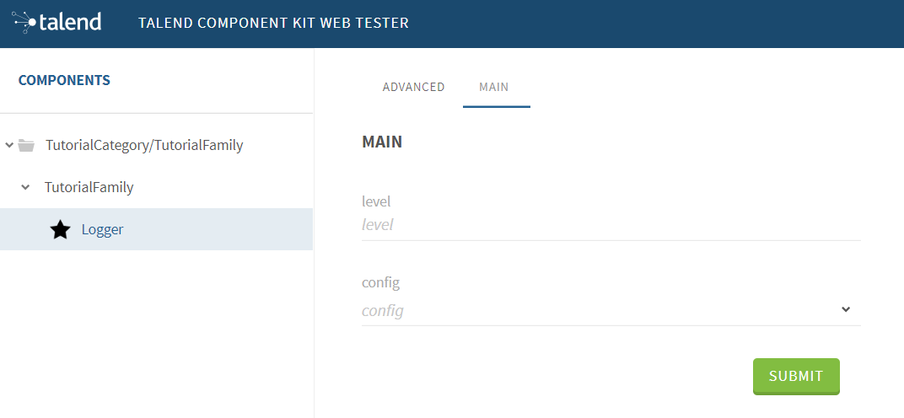
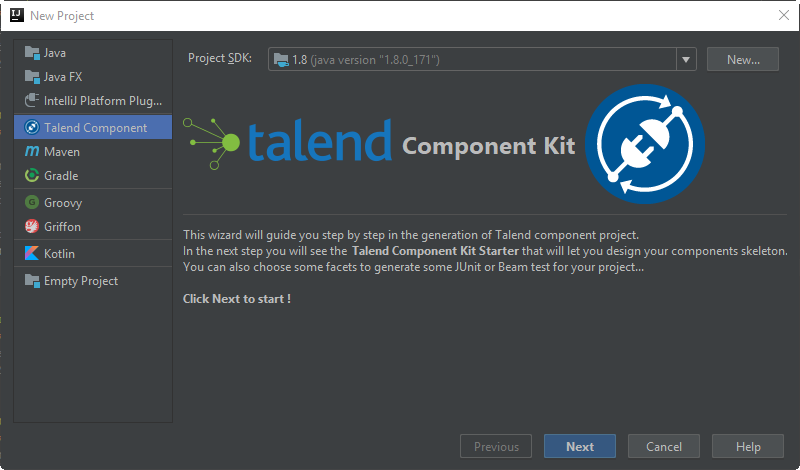
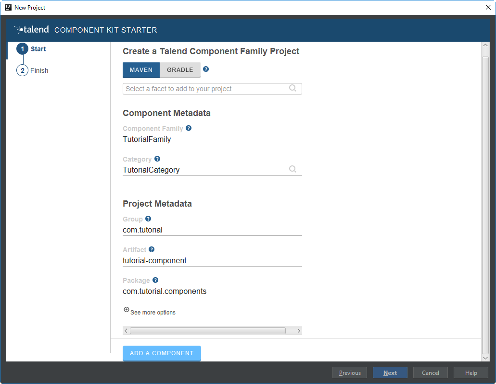
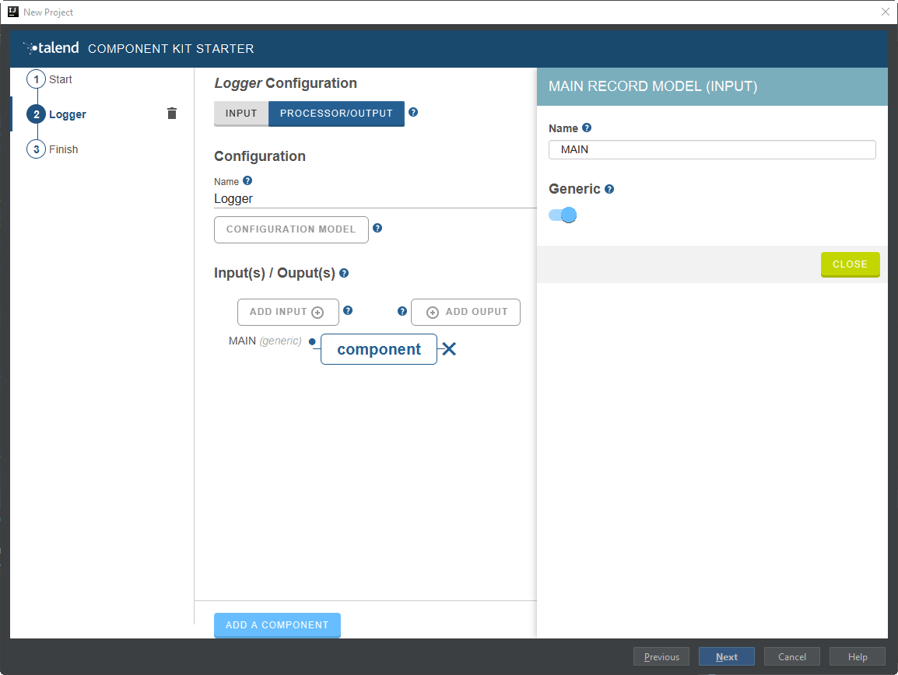
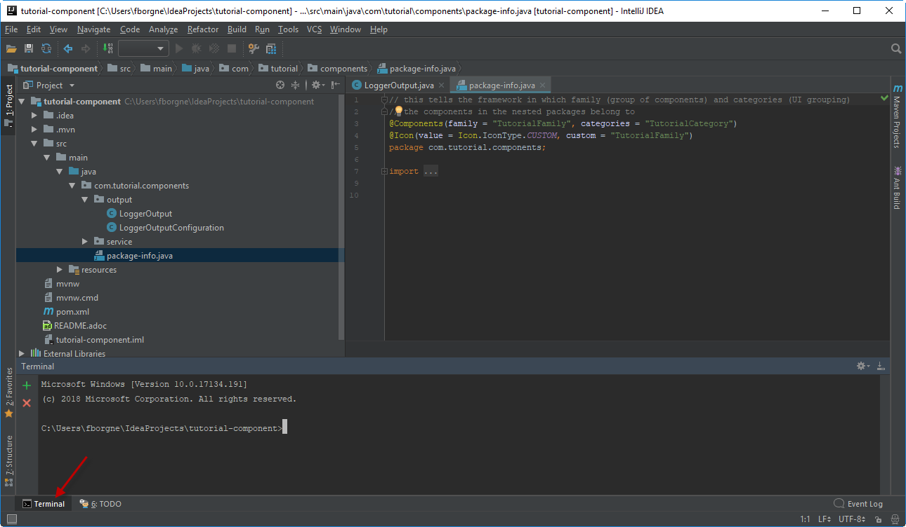
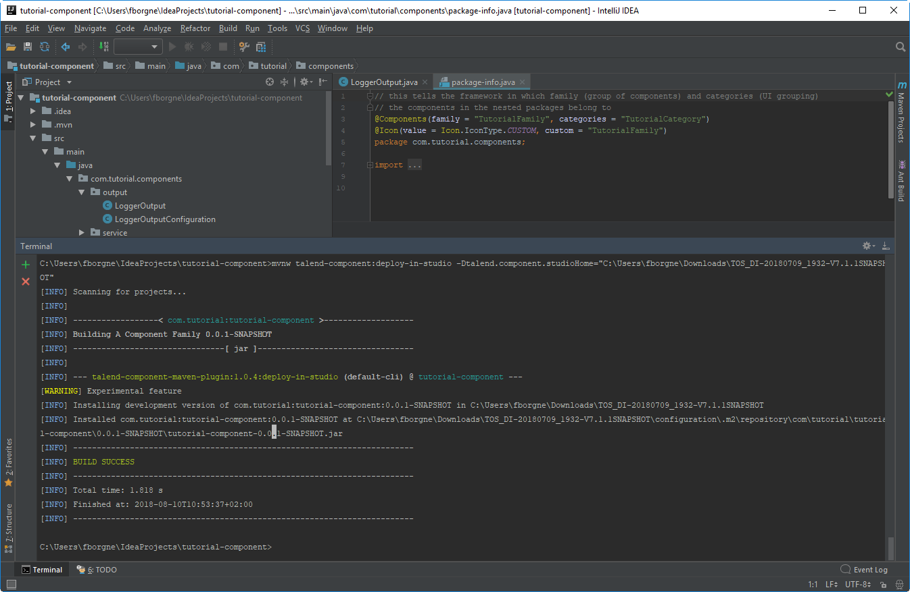
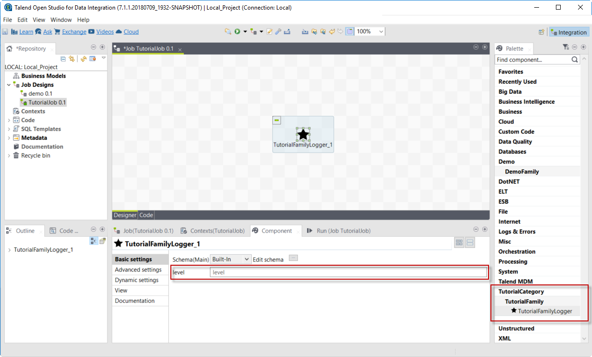
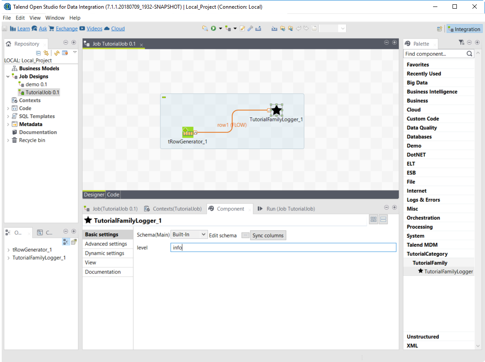

Talend components are functional objects that let you easily perform operations on given sets of data, through a comprehensive graphical environment.
Talend Component Kit is a framework designed to help you developing new Talend components. From generating a Java project and coding until testing and using them in Talend applications, use this toolkit to ensure your components fit your needs.
If you are new to Talend component development or with the Talend Component Kit framework, you can start by reading the following articles to get a better overview of the framework design.
You can also learn the basics of component development by following this tutorial:
To learn more about Talend components in general and about existing components that you can already use, refer to the following documents:
Talend Component Kit methodology
Talend Component Kit is a framework designed to simplify the development of components at two levels:
-
Runtime: Runtime is about injecting the specific component code into a job or pipeline. The framework helps unify as much as possible the code required to run in Data Integration (DI) and BEAM environments.
-
Graphical interface: The framework helps unify the code required to be able to render the component in a browser (web) or in the Eclipse-based Studio (SWT).
Before being able to develop new components, check the prerequisites to make sure that you have all you need to get started.
Developing new components using the framework includes:
-
Creating a project using the starter or the Talend IntelliJ plugin. This step allows to build the skeleton of the project. It consists in:
-
Defining the general configuration model for each component in your project
-
Generating and downloading the project archive from the starter
-
Compiling the project
-
-
Importing the compiled project in your IDE. This step is not required if you have generated the project using the IntelliJ plugin.
-
Implementing the components, including:
-
Registering the component by specifying its metadata: family, categories, version, icon, type, and name.
-
Defining the layout and configurable part of the components
-
Defining the partition mapper for Input components
-
Implementing the source logic (producer) for Input components
-
Defining the processor for Output components
-
-
Deploying the components to Talend Studio or Cloud applications
Some additional configuration steps can be necessary according to your requirements:
-
Defining services that can be reused in several components

General component execution logic
Each type of component has its own execution logic. The same basic logic is applied to all components of the same type, and is then extended to implement each component specificities. The project generated from the starter already contains the basic logic for each component.
Talend Component Kit framework relies on several primitive components.
All components can use @PostConstruct and @PreDestroy annotations to initialize or release some underlying resource at the beginning and the end of a processing.
In distributed environments, class constructor are called on cluster manager nodes. Methods annotated with @PostConstruct and @PreDestroy are called on worker nodes. Thus, partition plan computation and pipeline tasks are performed on different nodes.
|

-
The created task is a JAR file containing class information, which describes the pipeline (flow) that should be processed in cluster.
-
During the partition plan computation step, the pipeline is analyzed and split into stages. The cluster manager node instantiates mappers/processors, gets estimated data size using mappers, and splits created mappers according to the estimated data size.
All instances are then serialized and sent to the worker node. -
Serialized instances are received and deserialized. Methods annotated with
@PostConstructare called. After that, pipeline execution starts. The@BeforeGroupannotated method of the processor is called before processing the first element in chunk.
After processing the number of records estimated as chunk size, the@AfterGroupannotated method of the processor is called. Chunk size is calculated depending on the environment the pipeline is processed by. Once the pipeline is processed, methods annotated with@PreDestroyare called.
| All the methods managed by the framework must be public. Private methods are ignored. |


| The framework is designed to be as declarative as possible but also to stay extensible by not using fixed interfaces or method signatures. This allows to incrementally add new features of the underlying implementations. |
Talend Component Kit Overview
Talend Component Kit is a toolkit based on Java and designed to simplify the development of components at two levels:
-
Runtime: Runtime is about injecting the specific component code into a job or pipeline. The framework helps unify as much as possible the code required to run in Data Integration (DI) and BEAM environments.
-
Graphical interface: The framework helps unify the code required to be able to render the component in a browser (web) or in the Eclipse-based Studio (SWT).
Framework tools
The Talend Component Kit framework is made of several tools designed to help you during the component development process. It allows to develop components that fit in both Java web UIs.
-
Starter: Generate the skeleton of your development project using a user-friendly interface. The Talend Component Kit Starter is available as a web tool or as a plugin for the IntelliJ IDE.

-
Component API: Check all classes available to implement components.
-
Build tools: The framework comes with Maven and Gradle wrappers, which allow to always use the version of Maven or Gradle that is right for your component development environment and version.
-
Testing tools: Test components before integrating them into Talend Studio or Cloud applications. Testing tools include the Talend Component Kit Web Tester, which allows to check the web UI of your components on your local machine.

You can find more details about the framework design in this document.
Creating your first component
This tutorial walks you through all the required steps to get started with Talend Component Kit, from the creation of a simple component to its integration into Talend Open Studio.
The component created in this tutorial is a simple output component that receives data from the previous component and displays it in the logs, along with an extra information entered by a user.
Once the prerequisites completed, this tutorial should take you about 20 minutes.

Prerequisites
This tutorial aims at helping you to create your very first component. But before, get your development environment ready:
-
Download and install a Java JDK 1.8 or greater.
-
Download and install Talend Open Studio. For example, from Sourceforge.
-
Download and install IntelliJ.
-
Download the Talend Component Kit plugin for IntelliJ. The detailed installation steps for the plugin are available in this document.
Generating a simple component project
The first step in this tutorial is to generate a project containing a simple output component using the Starter included in the Talend Component Kit plugin for IntelliJ.
-
Start IntelliJ and create a new project. In the available options, you should see Talend Component.
 -
Make sure that a Project SDK is selected. Then, select Talend Component and click Next.
The Talend Component Kit Starter opens. -
Enter the project details. The goal here is to define the component and project metadata. Change the default values as follows:
-
The Component Family and the Category will be used later in Talend Open Studio to find the new component.
-
The project metadata are mostly used to identify the project structure. A common practice is to replace 'company' in the default value by a value of your own, like your domain name.
-
-
Once the metadata is filled, select ADD A COMPONENT. A new screen is displayed in the Talend Component Kit Starter that lets you define the generic configuration of the component.
-
Select PROCESSOR/OUTPUT and enter a valid Java name for the component. For example, Logger.
-
Select CONFIGURATION MODEL and add a string field named
level. This input field will be used in the component configuration to enter additional information to display in the logs.
-
In the Input(s) / Output(s) section, click the default MAIN input branch to access its detail, and toggle the Generic option to specify that the component can receive any type of data. Leave the Name of the branch with its default
MAINvalue.By default, when selecting PROCESSOR/OUTPUT, there is one input branch and no output branch for the component, which is fine in the case of this tutorial. A processor without any output branch is considered an output component. -
Click Next and check the name and location of your project, then click Finish to generate the project in the IDE.
At this point, your component is technically already ready to be compiled and deployed to Talend Open Studio. But first, have a look at the generated project:
-
Two classes based on the name and type of component defined in the Talend Component Kit Starter have been generated:
-
LoggerOutput is where the component logic is defined
-
LoggerOutputConfiguration is where the component layout and configurable fields are defined, including the level string field that was defined earlier in the configuration model of the component.
-
-
The package-info.java file contains the component metadata defined in the Talend Component Kit Starter, like the family and category.
-
You can notice as well that the elements in the tree structure are named after the project metadata defined in the Talend Component Kit Starter.
These files are the starting point if you later need to edit the configuration, logic, and metadata of your component.
There is more that you can do and configure with the Talend Component Kit Starter. This tutorial covers only the basics. You can find more information in this document.
Compiling and deploying the component to Talend Open Studio
Without any modification in the component code, you can compile the project and deploy the component to a local instance of Talend Open Studio.
This way, it will be easy to check that what is visible in the Studio is what is intended.
Before starting to run any command, make sure Talend Open Studio is not running.
-
From your component project in IntelliJ, open a terminal.
There, you can see that the terminal opens directly at the root of the project. All commands shown in this tutorial are performed from this folder.
-
Compile the project by running the following command:
mvnw clean install.
Themvnwcommand refers to the Maven wrapper that is shipped with Talend Component Kit. It allows to use the right version of Maven for your project without having to install it manually beforehand. An equivalent wrapper is available for Gradle. -
Once the command is executed and you see BUILD SUCCESS in the terminal, deploy the component to your local instance of Talend Open Studio using the following command:
mvnw talend-component:deploy-in-studio -Dtalend.component.studioHome="<path to Talend Open Studio home>"Replace the path by your own value. If the path contains spaces (for example, Program Files), enclose it with double quotes. -
Make sure the build is successful.
 -
Open Talend Open Studio and create a new Job:
-
The new component is present inside the new family and category that were specified in the Talend Component Kit Starter. You can add it to your job and open its settings.
-
Notice that the level field that was specified in the configuration model of the component in the Talend Component Kit Starter is present.

-
At this point, your new component is available in Talend Open Studio, and its configurable part is already set. But the component logic is still to be defined.
As a reminder, the initial goal of this component is to output the information it received in input in the logs of the job.
Go to the next section to learn how to define a simple logic.
Editing the component
You can now edit the component to implement a simple logic aiming at reading the data contained in the input branch of the component, to display it the execution logs of the job. The value of the level field of the component also needs to be displayed and changed to uppercase.
-
Save the job created earlier and close Talend Open Studio.
-
Back in IntelliJ open the LoggerOutput class. This is the class where the component logic can be defined.
-
Look for the
@ElementListenermethod. It is already present and references the default input branch that was defined in the Talend Component Kit Starter, but it is not complete yet. -
To be able to log the data in input to the console, add the following lines:
//Log to the console System.out.println("["+configuration.getLevel().toUpperCase()+"] "+defaultInput);The
@ElementListenermethod now looks as follows:@ElementListener public void onNext( @Input final JsonObject defaultInput) { // this is the method allowing you to handle the input(s) and emit the output(s) // after some custom logic you put here, to send a value to next element you can use an // output parameter and call emit(value). //Log to the console System.out.println("["+configuration.getLevel().toUpperCase()+"] "+defaultInput); }-
Open the Terminal again to compile the project and deploy the component again. To do that, run successively the two following commands:
-
mvnw clean install -
`mvnw talend-component:deploy-in-studio -Dtalend.component.studioHome="<path to Talend Open Studio home>"
-
-
The update of the component logic should now be deployed to the Studio. After restarting the Studio, you will be ready to build a job and use your component for the first time.
To learn the different possibilities and methods available to develop more complex logics, refer to this document.
If you want to avoid having to close and re-open Talend Open Studio every time you need to make an edit, you can enable the developer mode, as explained in this document.
Building a job with the component
As the component is now ready to be used, it is time to create a job and check that it behaves as intended.
-
Open Talend Open Studio again and go to the job created earlier. The new component is still there.
-
Add a tRowGenerator component and connect it to the logger.
-
Double-click the tRowGenerator to specify the data to generate:
-
Add a first column named
firstNameand select the *TalendDataGenerator.getFirstName() function. -
Add a second column named 'lastName' and select the *TalendDataGenerator.getLastName() function.
-
Set the Number of Rows for RowGenerator to
10.
-
-
Validate the tRowGenerator configuration.
-
Open the TutorialFamilyLogger component and set the level field to
info. -
Go to the Run tab of the job and run the job.
The job is executed. You can observe in the console that each of the 10 generated rows is logged, and that theinfovalue entered in the logger is also displayed with each record, in uppercase.